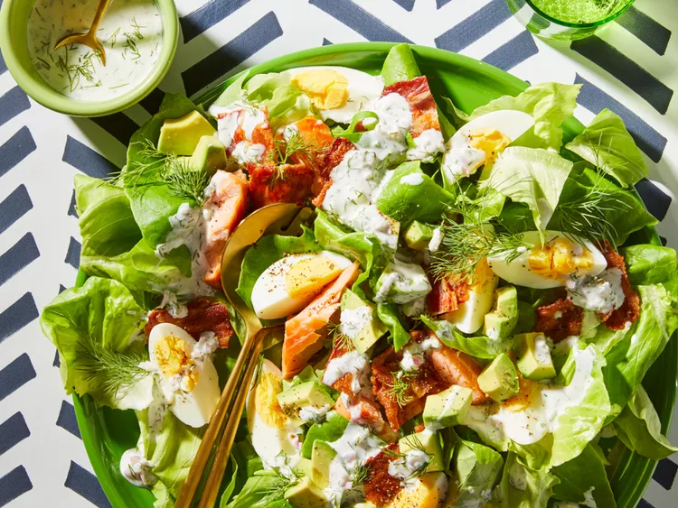

Salmon Cobb Salad/h1>
A few needed details to consider
- Preparation time: 30 mins or less
- Cooking time: 30-35 mins or less
- Serving per Preparation: 10
- Calories: 250g
- Protein: 13g
- Fat: 20g(maybe from the fish oil)
- Carbs: 3g
Final Product

Tiny Description
Salty, yummy, refreshing, and light. The dill adds an unexpected, amazing flavor.
It's addicting! Lots of great protein in this one, with the eggs and salmon.
List of required ingredients
- 3/4 cup buttermilk, the fresh the best
- 1/2 cup mayonnaise
- 1/4 cup pre-minced shallot
- 3 tablespoons chopped fresh dill
- 1 tablespoon lemon juice
- 1/2 teaspoon salt
- 1 head Bibb lettuce, leaves separated
- 8 ounces cooked bacon, cut into pieces
- 1 avocado, cut into 1/2-inch pieces
- 3 hard-boiled eggs, quartered and halved
- 1 package smoked salmon
- Any extra topping which you would like
Steps to be followed(simple to bring together)
-
Whisk buttermilk, mayonnaise, shallot, dill, lemon juice, and salt together in a bowl until dressing is smooth; refrigerate.
-
Mix lettuce, bacon, avocado, eggs, and salmon together in a bowl. Add dressing and toss until coated; season with black pepper.